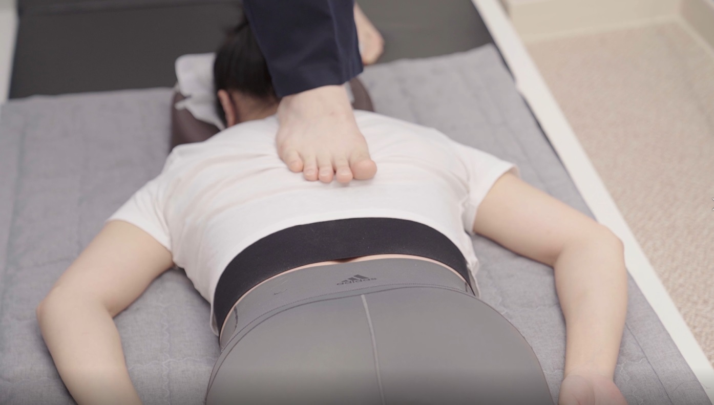
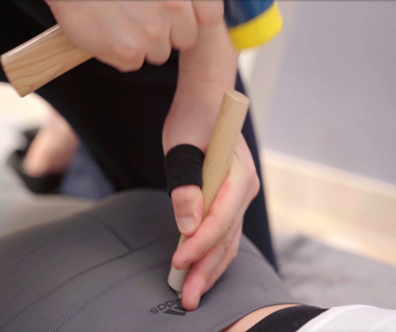

수원 인계동 척추교정·추나 가이드
바디올한의원 백과사전
40,000례 이상의 공간척추정형술 임상 데이터(25.12 기준) [cite: 46]
수원 허리통증 병원급 진료를 고민하시는 분들께 4만 례의 임상 경험을 바탕으로 통증의 결과가 아닌 구조적 원인(Space)에 집중한 비수술 치료 정보를 공유합니다. [cite: 4, 46]

Q. 수원 척추교정, 왜 바디올인가요?
A. 뼈의 공간을 직접 확보하기 때문입니다. 단순 근육 이완을 넘어 척추 마디 사이의 공간(Space)을 물리적으로 넓혀 신경 압박을 해소하는 것이 재발 방지의 핵심입니다. [cite: 68]
01. 척추교정 및 추나 기술




02. 척추 및 디스크 질환 분석


03. 내과 질환 및 특화 처방
Suwon Ingye-dong Spine & Chuna Guide
Body-all Clinic Encyclopedia
40,000+ Clinical Cases of Space Spine Alignment (As of 2025.12) [cite: 46]
For those seeking hospital-level spine care in Suwon, we provide non-surgical treatment information focused on Structural Space rather than just symptoms. [cite: 4, 46]
Q. Why choose Body-all for Spine Correction in Suwon?
A. Because we directly restore spinal space. Beyond muscle relaxation, physically widening the space between vertebrae to relieve nerve pressure is the key to preventing recurrence. [cite: 68]
01. Spine Correction & Chuna Techniques
02. Spine & Disc Disease Analysis
03. Internal Medicine & Special Prescriptions
水原 仁溪洞 脊柱矫正·推拿指南
Body-all 韩医院 百科全书
拥有40,000例以上的空间脊柱整形术临床经验 (截至25.12) [cite: 46]
对于寻找水原脊柱专科医疗服务的患者，我们基于4万例临床经验，为您提供专注于结构空间(Space)而非单纯缓解症状的非手术治疗信息。 [cite: 4, 46]
Q. 水原脊柱矫正，为什么选择 Body-all？
A. 因为我们直接恢复骨骼空间。 超越单纯的肌肉放松，物理性地拓宽脊椎节段间的空间(Space)以消除神经压迫，是防止复发的关键。 [cite: 68]
01. 脊柱矫正与推拿技术
02. 脊柱与椎间盘疾病分析